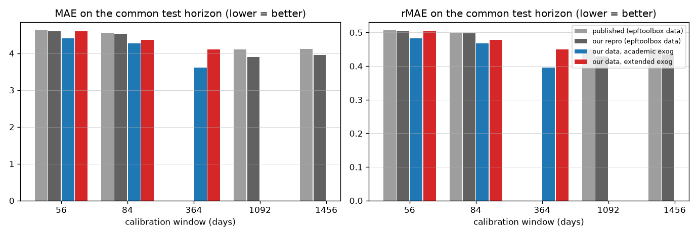
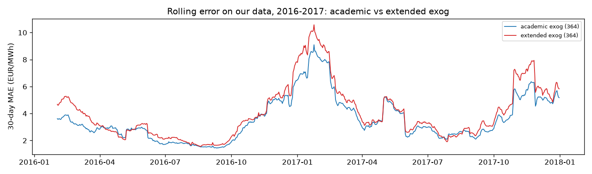

Generated 2026-08-11T06:59:28+00:00. Test horizon fixed to the
epftoolbox EPEX-DE period: 2016-01-04 to 2017-12-31 (728 days, 17,472 hours, daily
recalibration). Four series: published LEAR numbers (Lago et al. 2021, Table 2), our
reproduction on their data, and LEAR on our own dataset with two feature sets —
academic (load forecast + one aggregate RES forecast, their spec) and extended
(load + wind onshore/offshore + solar split, our lear-de spec). Windows 1092/1456 are
infeasible on our data (history starts 2015-01-05); window 364 is our headline config.
Runs: pep run lear-de --set test_start=2016-01-04 --set test_end=2017-12-31.
| series | window | MAE | rMAE | sMAPE | RMSE |
|---|---|---|---|---|---|
| published (epftoolbox data) | 56 | 4.619 | 0.506 | — | — |
| published (epftoolbox data) | 84 | 4.555 | 0.499 | — | — |
| published (epftoolbox data) | 1092 | 4.108 | 0.45 | — | — |
| published (epftoolbox data) | 1456 | 4.118 | 0.451 | — | — |
| our repro (epftoolbox data) | 56 | 4.593 | 0.504 | — | — |
| our repro (epftoolbox data) | 84 | 4.529 | 0.497 | — | — |
| our repro (epftoolbox data) | 1092 | 3.906 | 0.429 | — | — |
| our repro (epftoolbox data) | 1456 | 3.958 | 0.434 | — | — |
| our data, academic exog | 56 | 4.407 | 0.482 | 16.82 | 7.993 |
| our data, academic exog | 84 | 4.271 | 0.468 | 16.3 | 7.77 |
| our data, academic exog | 364 | 3.614 | 0.396 | 14.5 | 6.4 |
| our data, extended exog | 56 | 4.594 | 0.503 | 17.28 | 8.36 |
| our data, extended exog | 84 | 4.365 | 0.478 | 16.58 | 7.99 |
| our data, extended exog | 364 | 4.103 | 0.449 | 15.83 | 7.234 |

